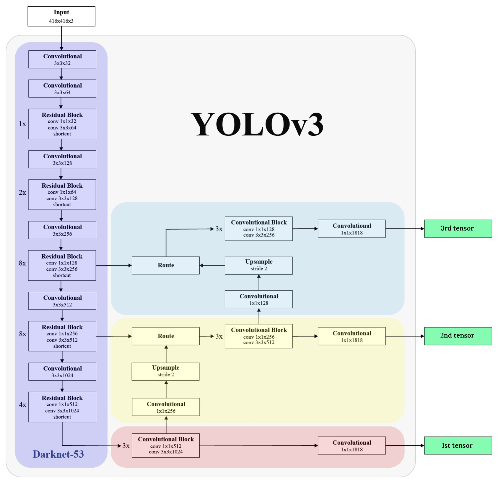

object detection using stacked yolov3
Introduction
Object detection is one of the pivotal and main demanding problems in computer vision. When we check out images or videos, we will easily locate and identify the objects of our interest within moments. The only way to transfer this human intelligence to computers is through object detection, which involves finding and recognizing the item. Similarly, to detect the objects through a computer we'd like some algorithms.
-
We can detect objects not only from the pictures but also from the videos.
- The images will be assigned class labels throughout the image classification process.
- Object Localization pinpoints to seek out the location of the single object inside the image.
- Object detection is the result of combining object localization and image classification.
- Object detection is tougher and fuses these two tasks and draws a bounding box around each object of interest in the image and assigns them a class label.
- One of the further extensions to this computer vision task is Object Segmentation also called “Object Instance Segmentation”. In this, the instances of identified objects are stipulated by highlighting the certain pixels of the object instead of a coarse bounding box.
OVERVIEW OF THE ARCHITECTURE
YOLOv3 contains Darknet-53 architecture. It has fifty-three convolutional layers and is trained on the ImageNet dataset. This model is additional powerful to spot even tiny objects from the image. YOLOV3 can be able to recognize quite eighty varied objects in one image. For the task of detection, fifty-three additional layers are stacked onto it, giving us a 106 layer fully convolutional underlying design for YOLOv3.